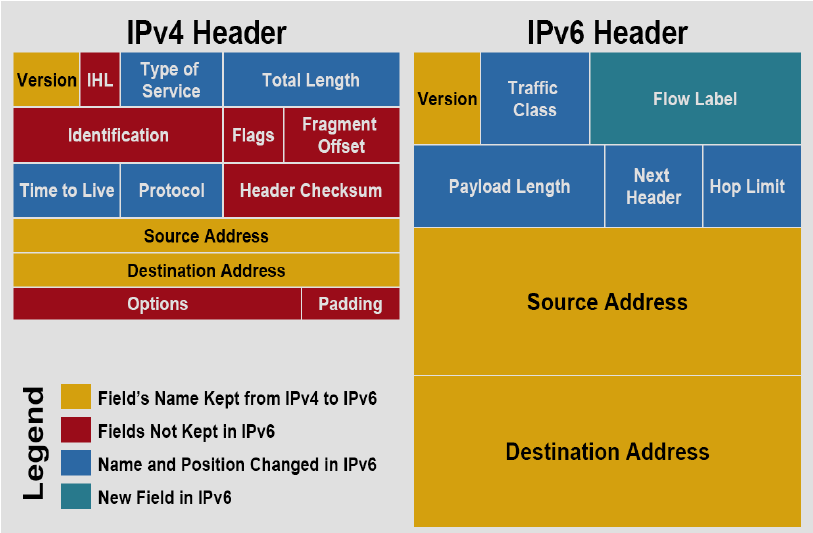
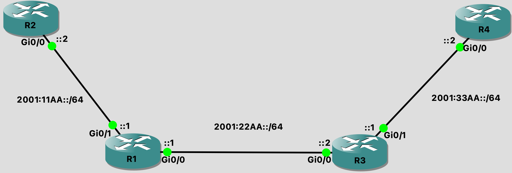

IPv6 Routing
Understanding and Implementing IPv6 Addressing
Rationale for IPv6
Yes there IS an IP Address shortage!
USA is still sitting pretty
Asia and Africa received single class C for entire country
Current IP Addresses poorly allocated
Agencies needing class C asked for class B
Estimates of IPv4 exhaustion largely debated (2011 - 2041)
New network devices on the rise
NAT (our current solution) is now seen as a hinderence to innovation
Potential future features: IPSec everywhere, mobility, simpler header
IPv6 Addressing
Address size moved from 32-bit (IPv4) to 128-bit (IPv6)
Provides 340,282,366,920,138,463,463,374,607,431,770,000,000 addresses
To make addresses more manageable, divided into 8 groups of 4 hex characters each:
2001:0050:0000:0000:0000:0AB4:1E2B:98AARule 1: eliminate groups of consecutive zeros
2001:0050::0AB4:1E2B:98AARule 2: Drop leading zeros:
2001:50::AB4:1E2B:98AA
Simplified IPv6 Headers
Types of Communication and Addresses
Unicast: one-to-one
Multicast: one-to-many
Anycast: one-to-closest
Link local scope address: layer 2 domain
Unique/site-local scope address: organization
Global scope address: internet
Link Local Addresses
Assigned automatically as an IPv6 host comes online
Similar to the 169.254.x.x addresses of IPv4
Always begins with
fe80(first 10 bits:1111 1110 10) followed by 54 bits of zerosLast 64 bits is the 48-bit mac address with
FFFEsqueezed in the middle
Global Addresses
Have their high-level 3 bits set to
0001(2000::/3)Global routing prefix is 48 bits or less
Subnet ID is comprised of whatever bits are left over after global routing prefix
The primary addresses expected to comprise the ipv6 internet are from the
2001::/16subnet
Implementing IPv6 Routing and Routing Protocols
Configuring IPv6 Addressing
Things to discuss:
Manual address
link local address
Manual LL address
ICMP ND (neighbor discovery) (goodbye ARP -
sh ipv6 neighbors)Multicast addresses
Ping
R1
R1(config)#int g0/1
R1(config-if)#ipv6 address 2001:11AA::1/64
R1(config-if)#no shut
R1(config-if)#int g0/0
R1(config-if)#ipv6 address 2001:22AA::1/64
R1(config-if)#no shut
R2
R2(config)#int g0/0
R2(config-if)#ipv6 address 2001:11AA::2/64
R2(config-if)#no shut
R2(config-if)#do ping 2001:11AA::1
Type escape sequence to abort.
Sending 5, 100-byte ICMP Echos to 2001:11AA::1, timeout is 2 seconds:
!!!!!
Success rate is 100 percent (5/5), round-trip min/avg/max = 1/3/10 ms
R3
R3(config)#int g0/0
R3(config-if)#ipv6 address 2001:22AA::2/64
R3(config-if)#no shut
R3(config-if)#int g0/1
R3(config-if)#ipv6 address 2001:33AA::1/64
R3(config-if)#no shut
R4
R4(config)#int g0/0
R4(config-if)#ipv6 address 2001:33AA::2/64
R4(config-if)#no shut
R4#sh ipv6 neighbors
IPv6 Address Age Link-layer Addr State Interface
2001:33AA::1 4 0cfa.0cae.ce01 STALE Gi0/0
FE80::EFA:CFF:FEAE:CE01 4 0cfa.0cae.ce01 STALE Gi0/0
Debugging
R3#debug ipv6 nd
Feb 23 06:19:19.011: ICMPv6-ND: ND input feature SEND executed on 3 - rc=0
Feb 23 06:19:19.011: ICMPv6-ND: (GigabitEthernet0/1,2001:33AA::1) Received NS from 2001:33AA::2
Feb 23 06:19:19.012: ICMPv6-ND: Validating ND packet options: valid
Feb 23 06:19:19.012: ICMPv6-ND: Created ND Entry Chunk pool
Feb 23 06:19:19.013: ICMPv6-ND: (GigabitEthernet0/1,2001:33AA::2) Glean
Feb 23 06:19:19.013: ICMPv6-ND: (GigabitEthernet0/1,2001:33AA::2) LLA 0cfa.0cd7.b400
Feb 23 06:19:19.014: ICMPv6-ND: (GigabitEthernet0/1,2001:33AA::2) INCMP -> STALE
Feb 23 06:19:19.014: ICMPv6-ND: (GigabitEthernet0/1,2001:33AA::1) Sending NA to 2001:33AA::2
Feb 23 06:19:19.016: ICMPv6-ND: ND output feature SEND executed on 3 - rc=0
Feb 23 06:19:19.017: ICMPv6-ND: (GigabitEthernet0/1,2001:33AA::2) STALE -> DELAY
Feb 23 06:19:24.080: ICMPv6-ND: (GigabitEthernet0/1,2001:33AA::2) DELAY -> PROBE
Feb 23 06:19:24.081: ICMPv6-ND: (GigabitEthernet0/1,2001:33AA::2) Sending NS
Feb 23 06:19:24.081: ICMPv6-ND: ND output feature SEND executed on 3 - rc=0
Feb 23 06:19:24.088: ICMPv6-ND: ND input feature SEND executed on 3 - rc=0
Feb 23 06:19:24.088: ICMPv6-ND: (GigabitEthernet0/1,2001:33AA::2) Received NA from 2001:33AA::2
Feb 23 06:19:24.088: ICMPv6-ND: Packet contains no options
Feb 23 06:19:24.088: ICMPv6-ND: Validating ND packet options: valid
Feb 23 06:19:24.089: ICMPv6-ND: Packet contains no options
Feb 23 06:19:24.089: ICMPv6-ND: (GigabitEthernet0/1,2001:33AA::2) PROBE -> REACH
Feb 23 06:19:29.146: ICMPv6-ND: ND input feature SEND executed on 3 - rc=0
Feb 23 06:19:29.147: ICMPv6-ND: (GigabitEthernet0/1,FE80::EFA:CFF:FEAE:CE01) Received NS from FE80::EFA:CFF:FED7:B400
Feb 23 06:19:29.147: ICMPv6-ND: Validating ND packet options: valid
Feb 23 06:19:29.147: ICMPv6-ND: (GigabitEthernet0/1,FE80::EFA:CFF:FED7:B400) Glean
Feb 23 06:19:29.148: ICMPv6-ND: (GigabitEthernet0/1,FE80::EFA:CFF:FED7:B400) LLA 0cfa.0cd7.b400
Feb 23 06:19:29.148: ICMPv6-ND: (GigabitEthernet0/1,FE80::EFA:CFF:FED7:B400) INCMP -> STALE
Feb 23 06:19:29.148: ICMPv6-ND: (GigabitEthernet0/1,FE80::EFA:CFF:FEAE:CE01) Sending NA to FE80::EFA:CFF:FED7:B400
Feb 23 06:19:29.150: ICMPv6-ND: ND output feature SEND executed on 3 - rc=0
Feb 23 06:19:29.151: ICMPv6-ND: (GigabitEthernet0/1,FE80::EFA:CFF:FED7:B400) STALE -> DELAY
Feb 23 06:19:34.198: ICMPv6-ND: (GigabitEthernet0/1,FE80::EFA:CFF:FED7:B400) DELAY -> PROBE
Feb 23 06:19:34.198: ICMPv6-ND: (GigabitEthernet0/1,FE80::EFA:CFF:FED7:B400) Sending NS
Feb 23 06:19:34.199: ICMPv6-ND: ND output feature SEND executed on 3 - rc=0
Feb 23 06:19:34.203: ICMPv6-ND: ND input feature SEND executed on 3 - rc=0
Feb 23 06:19:34.203: ICMPv6-ND: (GigabitEthernet0/1,FE80::EFA:CFF:FED7:B400) Received NA from FE80::EFA:CFF:FED7:B400
Feb 23 06:19:34.204: ICMPv6-ND: Packet contains no options
Feb 23 06:19:34.204: ICMPv6-ND: Validating ND packet options: valid
Feb 23 06:19:34.204: ICMPv6-ND: Packet contains no options
Feb 23 06:19:34.204: ICMPv6-ND: (GigabitEthernet0/1,FE80::EFA:CFF:FED7:B400) PROBE -> REACH
Feb 23 06:19:54.193: ICMPv6-ND: (GigabitEthernet0/1,2001:33AA::2) REACH -> STALE
Feb 23 06:20:04.264: ICMPv6-ND: (GigabitEthernet0/1,FE80::EFA:CFF:FED7:B400) REACH -> STALE
IPv6 Static Routes
R1
R1(config)#ipv6 unicast-routing
R1(config)#ipv6 route 2001:33aa::/64 2001:22aa::2
R2
R2(config)#ipv6 unicast-routing
R2(config)#ipv6 route ::/0 2001:11aa::1
R3
R3(config)#ipv6 unicast-routing
R3(config)#ipv6 route 2001:11aa::/64 2001:22aa::1
R4
R4(config)#ipv6 unicast-routing
R4(config)#ipv6 route 2001:22aa::/64 2001:33aa::1
R4(config)#ipv6 route 2001:11aa::/64 2001:33aa::1
R4#traceroute ipv6 2001:11aa::2
Type escape sequence to abort.
Tracing the route to 2001:11AA::2
1 2001:33AA::1 4 msec 2 msec 2 msec
2 2001:22AA::1 4 msec 3 msec 4 msec
3 2001:11AA::2 5 msec 4 msec 4 msec
IPv6 RIP
R1
R1(config)#ipv6 unicast-routing
R1(config)#int g0/0
R1(config-if)#ipv6 rip CALEB enable
R1(config-if)#int g0/1
R1(config-if)#ipv6 rip CALEB enable
R2
R2(config)#ipv6 unicast-routing
R2(config)#int g0/0
R2(config-if)#ipv6 rip CALEB enable
R2(config-if)#do sh ipv6 route
IPv6 Routing Table - default - 4 entries
Codes: C - Connected, L - Local, S - Static, U - Per-user Static route
B - BGP, HA - Home Agent, MR - Mobile Router, R - RIP
H - NHRP, I1 - ISIS L1, I2 - ISIS L2, IA - ISIS interarea
IS - ISIS summary, D - EIGRP, EX - EIGRP external, NM - NEMO
ND - ND Default, NDp - ND Prefix, DCE - Destination, NDr - Redirect
RL - RPL, O - OSPF Intra, OI - OSPF Inter, OE1 - OSPF ext 1
OE2 - OSPF ext 2, ON1 - OSPF NSSA ext 1, ON2 - OSPF NSSA ext 2
la - LISP alt, lr - LISP site-registrations, ld - LISP dyn-eid
lA - LISP away, a - Application
C 2001:11AA::/64 [0/0]
via GigabitEthernet0/0, directly connected
L 2001:11AA::2/128 [0/0]
via GigabitEthernet0/0, receive
R 2001:22AA::/64 [120/2]
via FE80::EFA:CFF:FE51:3201, GigabitEthernet0/0
L FF00::/8 [0/0]
via Null0, receive
R3
R3(config)#ipv6 unicast-routing
R3(config)#int g0/0
R3(config-if)#ipv6 rip CALEB enable
R3(config-if)#int g0/1
R3(config-if)#ipv6 rip CALEB enable
R4
R4(config)#ipv6 unicast-routing
R4(config)#int g0/0
R4(config-if)#ipv6 rip CALEB enable
R4(config-if)#do sh ipv6 protocols
IPv6 Routing Protocol is "connected"
IPv6 Routing Protocol is "application"
IPv6 Routing Protocol is "ND"
IPv6 Routing Protocol is "rip CALEB"
Interfaces:
GigabitEthernet0/0
Redistribution:
None
R4(config)#ipv6 router rip CALEB
R4(config-rtr)#?
default Set a command to its defaults
distance Administrative distance
distribute-list Filter networks in routing updates
exit Exit from IPv6 routing protocol configuration mode
maximum-paths Forward packets over multiple paths
no Negate a command or set its defaults
poison-reverse Poison reverse updates
redistribute Redistribute IPv6 prefixes from another routing protocol
split-horizon Split horizon updates
timers Adjust routing timers
OSPFv3
R1
R1(config)#ipv6 unicast-routing
R1(config)#int g0/0
R1(config-if)#ipv6 ospf 1 area 0
R1(config-if)#int g0/1
R1(config-if)#ipv6 ospf 1 area 10
R1(config-if)#ipv6 router ospf 1
R1(config-rtr)#router-id 0.0.0.1
R2
R2(config)#ipv6 unicast-routing
R2(config)#int g0/0
R2(config-if)#ipv6 ospf 1 area 10
R2(config-if)#ipv6 router ospf 1
R2(config-rtr)#router-id 0.0.0.2
R3
R3(config)#ipv6 unicast-routing
R3(config)#int g0/0
R3(config-if)#ipv6 ospf 1 area 0
R3(config-if)#int g0/1
R3(config-if)#ipv6 ospf 1 area 20
R3(config-if)#ipv6 router ospf 1
R3(config-rtr)#router-id 0.0.0.3
R4
R4(config)#ipv6 unicast-routing
R4(config)#int g0/0
R4(config-if)#ipv6 ospf 1 area 20
R4(config-if)#ipv6 router ospf 1
R4(config-rtr)#router-id 0.0.0.4
R4(config)#do sh ipv6 route
IPv6 Routing Table - default - 5 entries
Codes: C - Connected, L - Local, S - Static, U - Per-user Static route
B - BGP, HA - Home Agent, MR - Mobile Router, R - RIP
H - NHRP, I1 - ISIS L1, I2 - ISIS L2, IA - ISIS interarea
IS - ISIS summary, D - EIGRP, EX - EIGRP external, NM - NEMO
ND - ND Default, NDp - ND Prefix, DCE - Destination, NDr - Redirect
RL - RPL, O - OSPF Intra, OI - OSPF Inter, OE1 - OSPF ext 1
OE2 - OSPF ext 2, ON1 - OSPF NSSA ext 1, ON2 - OSPF NSSA ext 2
la - LISP alt, lr - LISP site-registrations, ld - LISP dyn-eid
lA - LISP away, a - Application
OI 2001:11AA::/64 [110/3]
via FE80::EFA:CFF:FEAE:CE01, GigabitEthernet0/0
OI 2001:22AA::/64 [110/2]
via FE80::EFA:CFF:FEAE:CE01, GigabitEthernet0/0
C 2001:33AA::/64 [0/0]
via GigabitEthernet0/0, directly connected
L 2001:33AA::2/128 [0/0]
via GigabitEthernet0/0, receive
L FF00::/8 [0/0]
via Null0, receive
Transitioning to IPv6
The Migration to IPv6
Technology exists to provide a smooth, non-pressured transition:
Dual-stack routers
Tunneling (6to4 and 4to6)
NAT protocol translation (NAT-PT)